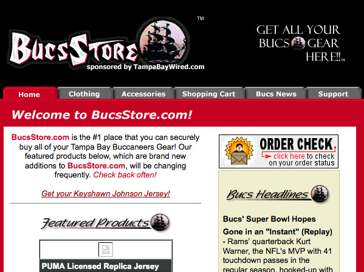
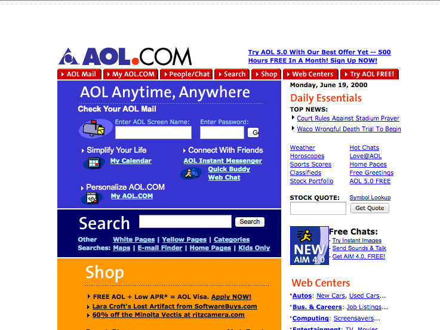
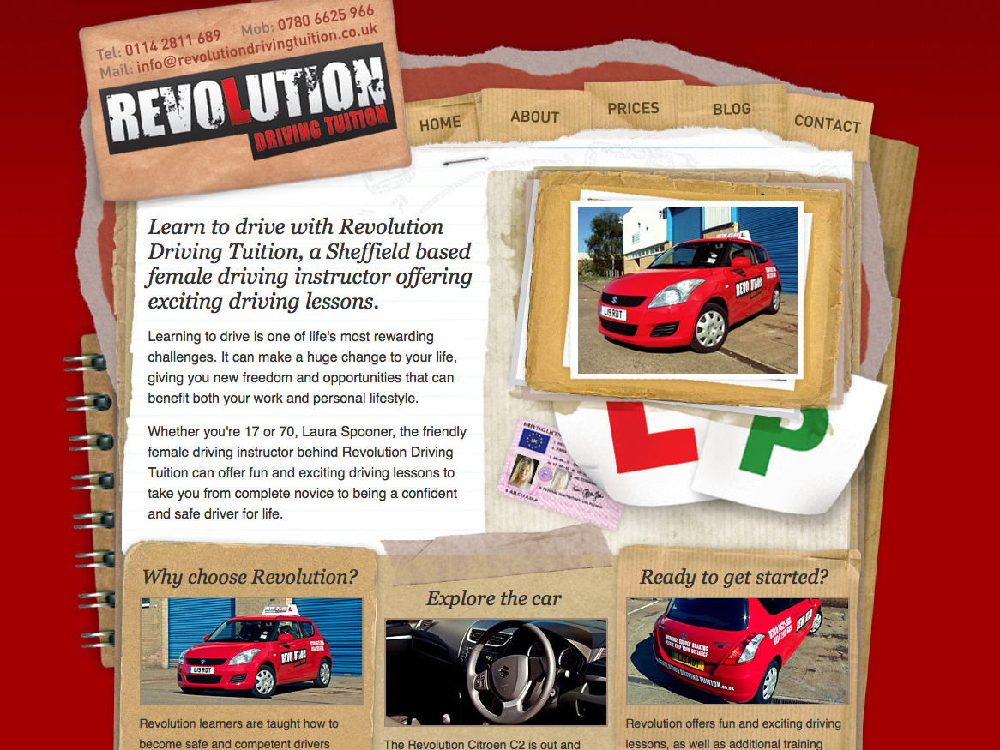

<!DOCTYPE html>
<!--[if lt IE 7]>      <html class="no-js lt-ie9 lt-ie8 lt-ie7"> <![endif]-->
<!--[if IE 7]>         <html class="no-js lt-ie9 lt-ie8"> <![endif]-->
<!--[if IE 8]>         <html class="no-js lt-ie9"> <![endif]-->
<!--[if gt IE 8]><!--> <html class="no-js"> <!--<![endif]-->
<head>
	<meta charset="utf-8">
    <meta http-equiv="X-UA-Compatible" content="IE=edge,chrome=1">
    <title>Trends im Webdesign - evoluzzr.de</title>
    <meta name="description" content="">
    <meta name="viewport" content="width=device-width, initial-scale=1, maximum-scale=1">

    <!-- Place favicon.ico and apple-touch-icon.png in the root directory -->

    <link rel="stylesheet" href="css/global.css">
    <link rel="stylesheet" href="css/introjs.min.css">
    <script src="js/vendor/modernizr.custom.js"></script>
</head>
<body>
	<section class="full head">
		<header class="main-header">
			<div class="logo">
				<a href="index.html" class="transition"></a>
				<p>Evolution des Webdesign</p>
			</div>
			<div class="top-menu">
				<ul>
					<li>
						<a href="#"><i class="icon-edit"></i>Registrieren</a>
					</li>
					<li>
						<a href="login.html"><i class="icon-signin"></i>Login</a>
					</li>
					<li>
						<input type="search" placeholder="Suche">
						<a href="#" class="search-link"><i class="icon-search"></i></a>
					</li>
					<li>
						<a href="#" class="klapp-toggle"><i class="icon-double-angle-down"></i></a>
					</li>
				</ul>

			</div>
		</header>
	</section>
	<section class="full glossar intro">
			<div class="year-intro">
				<h1>Trends im Webdesign von 1993 bis 2013</h1>
				<a href="2013.html" class="right back-year">zur Jahresauswahl</a>
			</div>
	</section>

	<section class="full">
		<div class="container glossar-container">
			<section class="glossar-content">
				<h1>A</h1>
				<aricle id="abgeflachteKanten" class="glossar-article">
					<h2>Abgeflachte Kanten / Relief</h2>
					<span class="year">Jahr: 2000</span>
					<p>	Abgeflachte Kanten sind ein Webdesigntrend aus lang vergessenen Tagen. Groß war die Versuchung bei den Designer alle Elemente mit dem stylischen Emboss-Effekt auszustatten. Man musste nur Photoshop starten und schon lächelte einen der damals beliebte Effekt an. Durch die abgeflachten Kanten erhielten die Elemente tiefe. Sie stechen von den flachen Elemente wie z.B. den Texten heraus und ziehen so die Betrachtung auf sich. </p>
					<ul>
						<li></li>
						<li></li>
						<li></li>
					</ul>
					<a href="#" class="more-pics">weitere Webseiten mit »Abgeflachte Kanten / Relief« ansehen</a>
				</aricle>
				<aricle id="abgerundeteEcken" class="glossar-article">
					<h2>Abgerundete Ecken</h2>
					<span class="year">Jahr: 2000</span>
					<p>	Abgerundete Ecken sind feste Designelemente im Webdesign. Sie wirken durch ihre runden Ecken nicht nur freundlich und einladend, sondern dienen vor allem dazu, die sonst quadratische Anmutung des Webdesign aufzubrechen. Normalerweise werden alle Elemente auf Internetseiten als Blöcke angezeigt. Mit den abgerundeten Ecken bricht der Designer dieses Layout und lässt die Seite spannend und besonders erscheinen.<br><br>

						Im Jahr 2000 stellten abgerundete Ecken allerdings noch eine große technische Hürde für Webentwickler dar. Eine CSS-basierende Unterstützung gab es nicht, so das die Ecken mit vier Bildern an die blockhaften Elemente angefügt werden müsste oder sie wurden direkt als ein Bild in den Hintergrund des Elemente hinzugefügt.  </p>
					<ul>
						<li></li>
						<li></li>
						<li></li>
					</ul>
					<a href="#" class="more-pics">weitere Webseiten mit »Abgerundete Ecken« ansehen</a>
				</aricle>
				<aricle id="angeschraegteEcken" class="glossar-article">
					<h2>Angeschrägte Ecken</h2>
					<span class="year">Jahr: 2003</span>
					<p>	Die angeschrägten Ecken habe eine ähnliche Wirkung wie die abgerundeten Ecken. Sie brechen das sonst sehr richtige und blockige Gestaltungsraster der Webseiten auf und verleihen ihnen Spannung. Im Gegensatz zu den abgerundeten Ecken wirken die angeschrägten allerdings ehr kühl und technisch.<br><br>

						Sie fügen sich damit allerdings perfekt in die Gestaltungstrends des Jahres 2003 ein und komplettieren die futuristisch, konstruierte Wirkung der Internetseiten.   </p>
					<ul>
						<li></li>
						<li></li>
						<li></li>
					</ul>
					<a href="#" class="more-pics">weitere Webseiten mit »Angeschrägte Ecken« ansehen</a>
				</aricle>
				<aricle id="animierteGIF" class="glossar-article">
					<h2>Animierte GIF's</h2>
					<span class="year">Jahr: 1996</span>
					<p>	Animierte GIF's waren der multimediale Höhepunkt des Web im Jahr 1996. Zwar konnte der Internet Explorer 3.0 auch Java Applets ausführen, der Netscape Navigator konnte dies aber nicht, so dass kein Entwickler sich besonders wohl dabei gefühlt hat besonders komplizierte Techniken auszuprobieren. Die animierten GIF(Graphics Interchange Format) Grafiken sorgten so also für ungewohnte Bewegungen auf den Internetseiten.<br><br>

						Der Vielfältigkeit war dabei keine Grenzen gesetzt. Es gab animierte Cartoons, sich bewegende grafische Formen und sogar ganze Filmsequenzen. </p>
					<ul>
						<li></li>
						<li></li>
						<li></li>
					</ul>
					<a href="#" class="more-pics">weitere Webseiten mit »Animierte GIF's« ansehen</a>
				</aricle>
				<aricle id="arialSchrift" class="glossar-article">
					<h2>Arial Schrift</h2>
					<span class="year">Jahr: 2000</span>
					<p>	Die "Arial"-Schrift hatte sich mittlerweile zur Standardschrift in der Webseitengestaltung entwickelt. Mit dem Erscheinen von Apples Betriebsystem OSX im Jahr 2000 war die Arial auch auf Macintosh Geräten verfügbar und machte sie somit für Webdesigner zur sicher einsetzbaren Schrift.<br><br>

						Viele Designer nutzen daher die Möglichkeit sich von bisher stark verbreiteten „Times New Roman“ loszusagen und nutzen vielmehr die serifenlose Schrift in ihren Gestaltungen. </p>
					<ul>
						<li></li>
						<li></li>
						<li></li>
					</ul>
					<a href="#" class="more-pics">weitere Webseiten mit »Arial Schrift« ansehen</a>
				</aricle>
				<h1>B</h1>
				<aricle id="blaueLinks" class="glossar-article">
					<h2>Blaue, unterstrichene Links</h2>
					<span class="year">Jahr: 1993</span>
					<p>	Blaue Links sind das Markenzeichen des World Wide Web. Die blaue Färbung und unterstrichene Hervorhebung ist das Standartdesign von Links auf Internetseiten. Vor allem durch die Farbe setzen sich die Links so perfekt vom Hintergrund ab und durch den Unterstrich wird ihre besondere Funktion als interaktives Element besonders hervorgehoben. </p>
					<ul>
						<li></li>
						<li></li>
					</ul>
					<a href="#" class="more-pics">weitere Webseiten mit »Blaue, unterstrichene Links« ansehen</a>
				</aricle>
				<aricle id="Brushes" class="glossar-article">
					<h2>Brushes</h2>
					<span class="year">Jahr: 2006</span>
					<p>	Farbspritzer, Blumenranken, Kritzeleien - sie erleben 2006 vor allem in Form von Photoshop Brushes großes Begehren. Die Einfachheit komplexe und spaßige Formen mit nur einem Klick zu erstellen machen diese Elemente bei Designern sehr beliebt.
						<br><br>

						Im Jahr 2006 versuchen vielen Designer mit den wilden Formen ihren Webseite eine persönliche Note zu geben. Gerade wegen des zeitgleich aktuellen Trends der ultra stilisierten und glänzenden Webgestaltung entwickeln sich die chaotischen Brush-Elemente als Gegenbewegung. </p>
					<ul>
						<li></li>
						<li></li>
						<li></li>
					</ul>
					<a href="#" class="more-pics">weitere Webseiten mit »Brushes« ansehen</a>
				</aricle>
				<aricle id="bunteFarben" class="glossar-article">
					<h2>Bunte Farben</h2>
					<span class="year">Jahr: 2006</span>
					<p>	Eine farbenfrohe Gestaltung war 2006 voll im Trend. Nach den kühlen und technisch-wirkenden Webdesigns Anfang der 2000er gab es bei den Designern den Drang zur Freundlichkeit der Internetseiten. Sie sollten kundenorientiert sein und daher einladend und leicht verständlich wirken. Durch die hellen, bunten Farben sollte diese Wirkung erzielt werden.</p>
					<ul>
						<li></li>
						<li></li>
						<li></li>
					</ul>
					<a href="#" class="more-pics">weitere Webseiten mit »Bunte Farben« ansehen</a>
				</aricle>
				<h1>C</h1>
				<aricle id="collagen" class="glossar-article">
					<h2>Collagen</h2>
					<span class="year">Jahr: 2009</span>
					<p>	Collagen im Webdesign sind ein Spaß beim Betrachten. Sie schaffen eine aus der analogen Welt bekannte Atmosphäre. Als Betrachter fühlt man sich nicht wie auf einer hochtechnischen durch unzählige Codezeile programmierte Webseite sondern ist vielmehr an den heimischen Schreibtisch erinnert. Gleichzeit brechen die wilden Collagen mit den sonst bekannten strikten Gestaltungsprinzipien des Internets. Keine rechteckigen Blöcke mehr mit sorgfältig angeordneten Texten. Stattdessen natürlich angeordnete Papierschnipsel mit wilden Handschrift- Kritzeleien.</p>
					<ul>
						<li></li>
						<li></li>
						<li></li>
					</ul>
					<a href="#" class="more-pics">weitere Webseiten mit »Collagen« ansehen</a>
				</aricle>
				<aricle id="condensedSchriften" class="glossar-article">
					<h2>Condensed Schriften</h2>
					<span class="year">Jahr: 2012</span>
					<p>	Mit der Aufnahme der „@font-face“ Regel in CSS3 und der Unterstützung der Browser dieser Regel, erlebte das Web eine wahre typografische Explosion. Endlich konnten Webdesigner beliebige Schriften verwenden und waren nichtmehr auf die begrenzten Systemschriften angewiesen.<br><br>

						Schriften im "Condensed"-Schriftschnitt, also in sehr gedrungener Form, stellten sich als Trend dieser typografische Entwicklung heraus. Da die Buchstaben sehr nah aneinander stehen ist es möglich, besonders viel Text auf kleinen Raum unterzubringen. Webdesigner nutzen die Schriften vor allem für Header- und Einleitungstexte um so einen kurzen Einleitungstext besonders groß darstellen zu können. </p>
					<ul>
						<li></li>
						<li></li>
						<li></li>
					</ul>
					<a href="#" class="more-pics">weitere Webseiten mit »Condensed Schriften« ansehen</a>
				</aricle>
				<h1>D</h1>
				<aricle id="diagonaleLinien" class="glossar-article">
					<h2>Diagonale Linien</h2>
					<span class="year">Jahr: 2012</span>
					<p>	Diagonale Linien im Design dienen vor allem der Erzeugung von Spannung. Sie brechen das starre rechtwinklige Raster das für‘s Layouten der meisten Webseiten genutzt wird. Zusätzlich können sie das Auge aber auch auf bestimmte Elemente locken und so diese besser herausstellen.<br><br>

						Gerade gegen 2012, wo der Trend zu klaren typografischen Rastern geht, sorgen die diagonalen für den gewissen „Pep“ im Webdesign. </p>
					<ul>
						<li></li>
						<li></li>
						<li></li>
					</ul>
					<a href="#" class="more-pics">weitere Webseiten mit »Diagonale Linien« ansehen</a>
				</aricle>

			</section>

			<aside class="glossar-sidebar">
				<h1>Überblick</h1>
				<ul>
					<li>A</li>
					<li><a class="scroll" href="#abgeflachteKanten">Abgeflachte Kanten</a></li>
					<li><a class="scroll" href="#abgerundeteEcken">Abgerundete Ecken</a></li>
					<li><a class="scroll" href="#angeschraegteEcken">Angeschrägte Ecken</a></li>
					<li><a class="scroll" href="#animierteGIF">Animierte GIF's</a></li>
					<li><a class="scroll" href="#arialSchrift">Arial Schrift</a></li>
					<li>B</li>
					<li><a class="scroll" href="#blaueLinks">Blaue, unterstrichene Links</a></li>
					<li><a class="scroll" href="#Brushes">Brushes</a></li>
					<li><a class="scroll" href="#bunteFarben">Bunte Farben</a></li>
					<li>C</li>
					<li><a class="scroll" href="#collagen">Collagen</a></li>
					<li><a class="scroll" href="#condensedSchriften">Condensed Schriften</a></li>
					<li>D</li>
					<li><a class="scroll" href="#diagonaleLinien">Diagonale Linien</a></li>
					<li>E</li>
					<li><a class="scroll" href="#eingefaerbteBilder">Eingefärbte Bilder</a></li>
					<li><a class="scroll" href="#einspaltig">Einspaltig/Listen</a></li>
					<li>F</li>
					<li><a class="scroll" href="#flatDesign">Flat Design</a></li>
					<li>G</li>
					<li><a class="scroll" href="#gekachelteHintergründe">Gekachelte Hintergründe</a></li>
					<li><a class="scroll" href="#georgiaSchrift">Georgia Schrift</a></li>
					<li><a class="scroll" href="#geringeAbstaende">Geringe Abstände</a></li>
					<li><a class="scroll" href="#gridLayouts">Grid Layouts</a></li>
					<li>H</li>
					<li><a class="scroll" href="#hightech">High Tech / Sci-Fi</a></li>
					<li><a class="scroll" href="#hochglanz">Hochglanz / Schein</a></li>
					<li>I</li>
					<li><a class="scroll" href="#icons">Icons</a></li>
					<li>K</li>
					<li><a class="scroll" href="#kreise">Kreise</a></li>
					<li>L</li>
					<li><a class="scroll" href="#lightSchriften">Light / Extended Schriften</a></li>
					<li><a class="scroll" href="#linien">Linien</a></li>
					<li>P</li>
					<li><a class="scroll" href="#pixelSchrift">Pixelschriften</a></li>
					<li><a class="scroll" href="#preisschilder">Preisschilder</a></li>
					<li>R</li>
					<li><a class="scroll" href="#retro">Retro</a></li>
					<li>S</li>
					<li><a class="scroll" href="#schleifenLetterpress">Schleifen / Letterpress</a></li>
					<li><a class="scroll" href="#schrilleFarben">Schrille Farben</a></li>
					<li><a class="scroll" href="#skeuomorphismus">Skeuomorphismus</a></li>
					<li>T</li>
					<li><a class="scroll" href="#texturen">Texturen</a></li>
					<li><a class="scroll" href="#timesSchrift">Times New Roman - Schrift</a></li>
					<li>V</li>
					<li><a class="scroll" href="#verläufe">Verläufe</a></li>
					<li>W</li>
					<li><a class="scroll" href="#wasserfarben">Wasserfarben</a></li>
					<li><a class="scroll" href="#weicheBildkanten">Weiche Bildkanten</a></li>
					<li><a class="scroll" href="#winzigeBilder">Winzige Bilder</a></li>
				</ul>
			</aside>
		</div>
	</section>


	<section class="full secondary-footer">
		<div class="container">
			<nav>
				<li><a href="index.html">Start</a></li>
				<li><a href="about.html">About</a></li>
				<li><a href="blog.html">Blog</a></li>
			</nav>
			<a class="to-top">
				<i class="icon-angle-up"></i>Nach Oben
			</a>
		</div>

	</section>
	<section class="full meta-footer">
		<div class="container">
			<p>&copy; 2013 evoluzzr - Evolution des Webdesign</p>
			<nav>
				<li class="share-devider"><a href="#"><i class="icon-twitter-sign"></i></a></li>
				<li class="share-devider"><a href="#"><i class="icon-google-plus-sign"></i></a></li>
				<li class="share-devider"><a href="#"><i class="icon-facebook-sign"></i></a></li>
				<li class="devider">Teilen</li>
				<li class="devider"><a href="#">Impressum</a></li>
				<li class="devider"><a href="#">Datenschutzerklärung</a></li>
			</nav>
		</div>

	</section>

		<div id="sidr-left" class="sidr left">
			<ul>
				<li><a href="1993.html">1993</a></li>
				<li><a href="1996.html">1996</a></li>
				<li><a href="2000.html">2000</a></li>
				<li><a href="2003.html">2003</a></li>
				<li><a href="2006.html">2006</a></li>
				<li><a href="2009.html">2009</a></li>
				<li class="active"><a href="2012.html">2012</a></li>
				<li><a href="2013.html">2013</a></li>
			</ul>
		</div>

		<div id="sidr-right" class="sidr right">
			<ul>
				<li><a href="#">Alle Trends</a></li>
				<li><a href="#">Kreise</a></li>
				<li><a href="#">Grid Layouts</a></li>
				<li><a href="#">Icons</a></li>
				<li><a href="#">Letterpress / Schleifen</a></li>
				<li><a href="#">Retro</a></li>
				<li><a href="#">Condensed Schriften</a></li>
				<li><a href="#">Skeuomorphismus</a></li>
				<li><a href="#">Diagonale Linien</a></li>
			</ul>
		</div>


		<script src="//ajax.googleapis.com/ajax/libs/jquery/1.9.1/jquery.min.js"></script>
		<script>window.jQuery || document.write('<script src="js/vendor/jquery-1.9.1.min.js"><\/script>')</script>
		<script src="js/vendor/grid.js"></script>
		<script src="js/plugins-ck.js"></script>
		<script src="js/main-ck.js"></script>
	</body>
</html>
